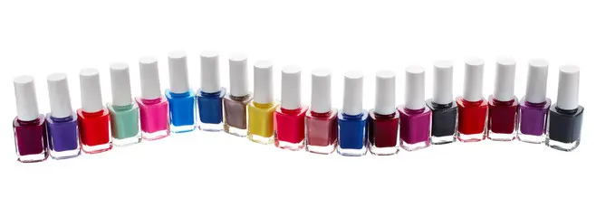
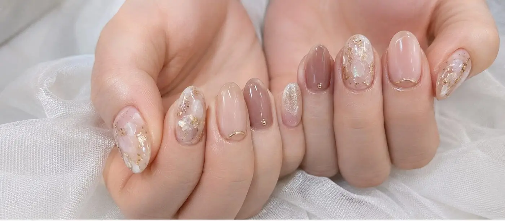

メニューと料金
ケアからワンカラー、オリジナルアートまで。お爪の状態やご予定にあわせて、施術内容をご提案します。
初回限定 ジェルオフ無料既存ジェルの除去料金（通常550円〜）をサービスします
ケア
一本一本の爪と向き合う、結-YUI-の基本のお手入れです。
-
パラフィンケア¥3,00030分
温かいパラフィンで、手先までじんわり保湿します。乾燥が気になる季節に。
-
甘皮ケア＋ハンドマッサージ¥4,00040分
丁寧な甘皮処理と、肩まわりまで届くハンドマッサージのセットです。
-
ジェルオフのみ¥1,500〜20分
爪への負担を抑えたオフと下処理にこだわっています。

ワンカラー
普段づかいから特別な日まで、飽きのこない定番デザインです。
-
ワンカラー（単色）¥5,00060分
お好みの1色を、丁寧な下処理とともに。
-
グラデーション¥6,00070分
2〜3色をぼかしながら重ねる、指先が華やぐデザインです。
-
フレンチ¥6,50070分
先端だけに色を効かせる、上品で長く楽しめる定番です。

アート
組紐の柄から着想した、当店オリジナルのアートです。1本ずつ丁寧に描き込みます。
-
刺繍ネイルアート（組紐柄）¥8,500100分
糸を編んだような立体的な柄を、指先に描きます。
-
ワンポイントアート（1〜2本）¥6,00070分
アートは1〜2本だけ。職場でも浮かない、さりげないおしゃれに。
-
オールハンドアート（10本）¥10,000120分
10本すべてにアートを施す、特別な日のためのデザインです。
※価格・施術時間はいずれも目安です。デザインの内容やお爪の状態により変わる場合があります。
※初回のお客様は、既存ジェルのオフ料金が無料になります。ご予約時にお伝えください。